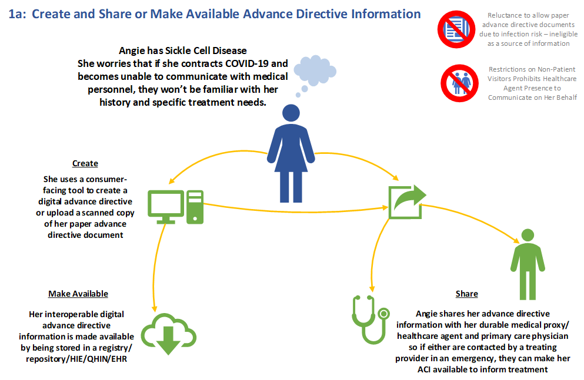
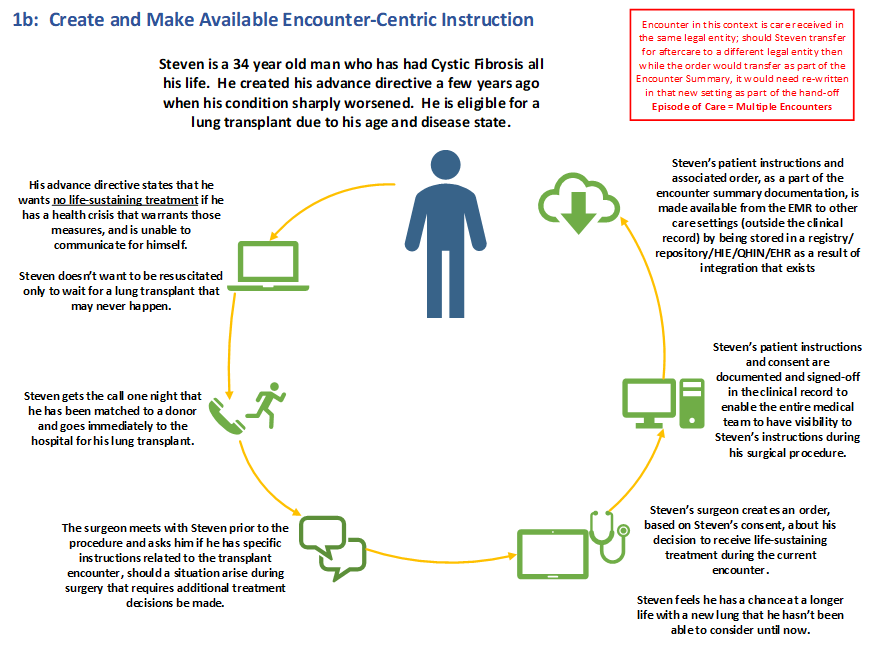

PACIO Advance Directive Information Implementation Guide
0.0.1 - STU1
PACIO Advance Directive Information Implementation Guide
0.0.1 - STU1
PACIO Advance Directive Information Implementation Guide - Local Development build (v0.0.1). See the Directory of published versions
Angie has Sickle Cell Disease. She worries that if she contracts COVID-19 and becomes unable to communicate with medical personnel, they won't be familiar with her history and specific treatment needs.
She uses a consumer facing tool to create a digital advance directive or upload a scanned copy of her paper advance directive document. Her interoperable digital advance directive information is made available by being stored in a registry/repository/HIE/QHIN/EHR.
Angie shares her advance directive information with her medical proxy/healthcare agent and primary care physician so if either are contacted by a treating provider in an emergency, they can make her advance directive accessible to inform treatment.

Steven is a 34 year old man who has had Cystic Fibrosis all his life. He created his advance directive a few years ago when his condition sharply worsened. He is eligible for a lung transplant due to his age and disease state.
His advance directive states that he wants no life-sustaining treatment if he has a health crisis that warrants those measures, and is unable to communicate for himself. Steven doesn't want to be resuscitated only to wait for a lung transplant that may never happen.
Steven gets the call one night that he has been matched to a donor and goes immediately to the hospital for his lung transplant.
The surgeon meets with Steven prior to the procedure and asks him if he has specific instructions related to the transplant encounter, should a situation arise during surgery that requires additional treatment decisions to be made.
Steven’s surgeon creates an order, based on Steven’s consent, about his decision to receive life-sustaining treatment during the current encounter. Steven feels he has a chance at a longer life with a new lung that he hasn't been able to consider until now.
Steven's patient instructions and consent are documented and signed-off in the clinical record to enable the entire medical team to have visibility into Steven’s instructions during his surgical procedure.
Steven’s patient instructions and associated order, as part of the encounter summary documentation, is made available from the EMR to other care settings (outside the clinical record) by being stored in a registry/repository/HIE/QHIN/EHR as a result of integration that exists.

Frank is a 78 year old man who has end stage kidney disease and receives dialysis 3x per week. He receives long term supportive services in his home. Frank is cognitively intact.
Frank suffers from a chronic health condition that has resulted in a limited life-expectancy of 6-12 months. He creates an advance directive with his caregiver. Frank does not want to have life-sustaining treatment rendered if his condition warrants those measures, if he is unable to communicate for himself.
Frank's condition worsens sharply one day and he is taken by ambulance to the nearest hospital for treatment. Frank tells the ER physician about his advance directive and the physician writes a DNR order, valid for that hospitalization only, to Frank's medical record.
Frank is transferred to a skilled nursing facility for post-acute care. The practitioner overseeing his care in the Skilled Nursing Facility (SNF) meets with Frank to discuss his goals of care, his hospital DNR, and reviews his advance directive with him. He recommends creation of a portable medical order for life-sustaining treatment to align with Frank's desire to prevent an unwanted hospital transfer.
The practitioner ensures the portable medical order for life-sustaining treatment document is added to Frank’s SNF medical record so it is accessible by facility staff in case of emergency. Frank also receives a copy of this new document, which he places in his bedside table.
The facility's medical record is integrated to the broader healthcare ecosystem which accessed Frank's advance directive, and now enables his portable medical order for life-sustaining treatment document to be available in a registry/repository/HIE/QHIN so as to inform treatment during a transition of care.
One evening Frank sustains a significant change in condition that renders him unconscious. The SNF care team reviews his portable medical order for life-sustaining treatment document to find he doesn't want to receive life-sustaining treatment. They call 911 in accordance with facility policy. Emergency access to Frank's ADI is granted, and the EMS personnel render comfort measures in concordance with his wishes.
IG © 2021+ HL7 Patient Empowerment Working Group. Package hl7.fhir.us.pacio-adi#0.0.1 based on FHIR 4.0.1. Generated 2021-03-11
Links: Table of Contents |
QA Report
| Version History |
Search |
 |
Propose a change
|
Propose a change